Ark2 Chorus Music Apps
gwenTone · Voice Renderer · Ark2 Chorus SBE (Sing by Ear)
Documentation and user guide — November 2026
1. Background: why these apps exist
Ark2 Chorus was organized in 2007 to help build the Mandaue City Central SDA Church (Maguikay).
The group had a recurring problem. Most members do not read music sheets, so when the trainer was not available, the group could not practise: nobody could tell the sopranos, altos, tenors and basses how their part should sound.
To solve this, Herald has the initiative to convert the pdf file to play a music sheet, so every member can hear their own part and learn it by ear, at any time, without waiting for the trainer.
- gwenTone (its working name is Pyesa Scanner) was the first app. It scans a music sheet, plays the piano or each voice part, and can render the parts so a real-sounding human voice sings the words. The name gwenTone honours the late organizers of Ark2 Chorus, Gwen & Tony Jayme.
- Inside gwenTone there is a helper (an agent) called Moshi, named after the code name of the person who do the initiative and started the app, the son of Gwen and Tony.
- gwenTone needs a computer running as a server, and not every choir member can reach it. So the work was
split into parts that members can use anywhere:
- Voice Renderer: the engine that generates the sung voice files.
- Ark2 Chorus SBE (Sing by Ear): the player that members install on their phones, with downloadable rendered voices that work offline.
2. How the three apps work together
Flow of one song from paper to the members' phones.
| App | Who uses it | Where it runs | What it produces |
|---|---|---|---|
| gwenTone | Ark2 encoder / admin | Windows PC, opened in the browser (local server) | A clean, checked score: .musicxml / .mxl |
| Voice Renderer | Ark2 encoder / admin | Windows PC, opened in the browser at http://localhost:9990/; can use a free Kaggle GPU | One sung audio file per voice part, the protected score (.ark2s) and renders (.ark2a), uploaded to the Online Drive; member accounts (PINs) |
| Ark2 Chorus SBE | Every choir member | Any phone (Android or iPhone), installed from https://ark2chorus.pages.dev/ | Practice: notes scrolling with the music, per-voice mixer, lyrics, rendered voices, offline use |
3. gwenTone (Pyesa Scanner)
gwenTone turns sheet music of any kind (printed, scanned, photographed or handwritten) into MusicXML, the standard file that music programs and our other apps read. It shows the score in the browser so you can listen to it and correct mistakes before it is sent to the Voice Renderer.
3.1 Starting gwenTone
- On the Ark2 PC, run
run.cmdin thePyesa Scannerfolder (or start it from LocalServer). - Open the address it shows in the browser (by default
http://localhost:9998/). - The first run installs everything it needs; after that it starts in a few seconds.
3.2 The home screen: add a music sheet
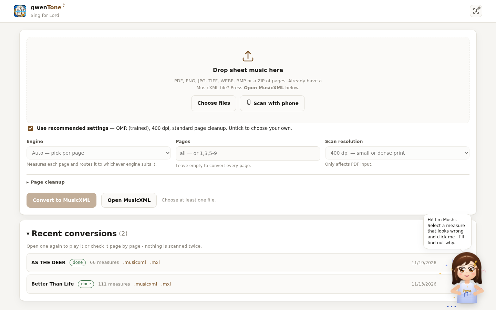
- Drop sheet music on the box, or press Choose files. PDF, PNG, JPG, TIFF, WEBP, BMP or a ZIP of pages are accepted. Several files are treated as one score, in order.
- No scanner? Press Scan with phone: a QR code appears; scan it with a phone on the same Wi‑Fi, photograph each page and tap Send.
- Keep Use recommended settings ticked (OMR trained engine, 400 dpi, standard page cleanup), or untick it to choose:
- Auto: measures each page and picks the right engine.
- Audiveris: printed and cleanly scanned music.
- AI: handwriting, phone photos, lead sheets (uses Claude, costs per page).
- Hybrid: Audiveris first, AI only if nothing is found.
- OMR (trained): Ark2's own model, tuned for hymns, choral and piano scores; free and offline.
- Press Convert to MusicXML. Already have a MusicXML file? Press Open MusicXML instead.
- Every finished song is kept under Recent conversions; click one to open it again (nothing is scanned twice).
3.3 Pages: see how each page was cleaned
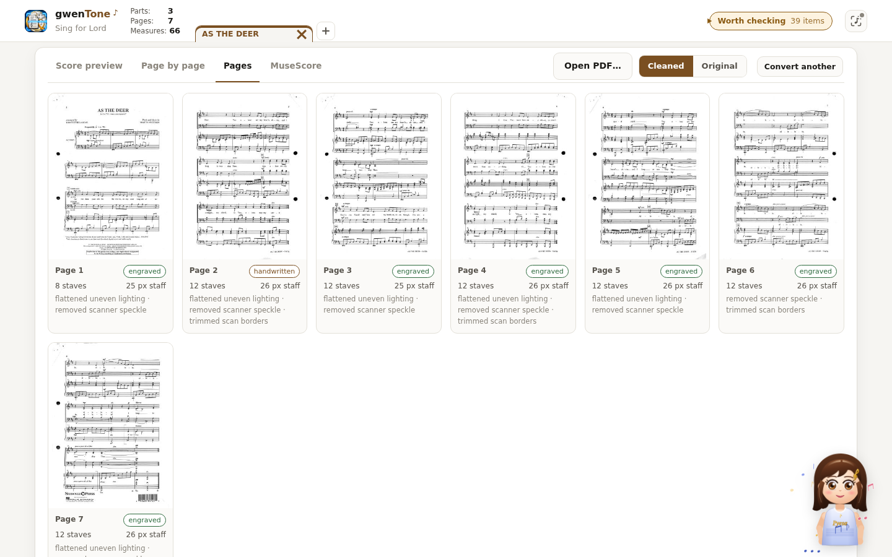
Before recognition, each page is straightened, lit evenly, cleaned of specks and trimmed. Cleaned / Original switches between the two versions, and Open PDF… makes a PDF of the pages.
3.4 Page by page: compare the scan with what was read
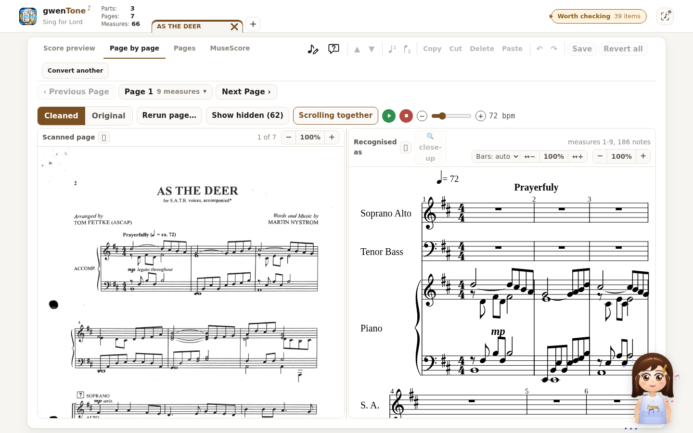
- Previous Page / Next Page move through the song; the page chip shows how many measures came from it.
- Scrolling together keeps both sides in step. Use − / + to make both the same size.
- Worth checking (top right) lists the measures that probably need a look.
- Click a note on the right to select it, then fix it with the palette (note value, sharp/flat, ▲▼ or the arrow keys to move the pitch, Copy / Cut / Paste, Undo). Press Save when done, or Revert all to throw the changes away.
- Rerun page… reads one page again with another engine.
3.5 Score preview: listen to the song
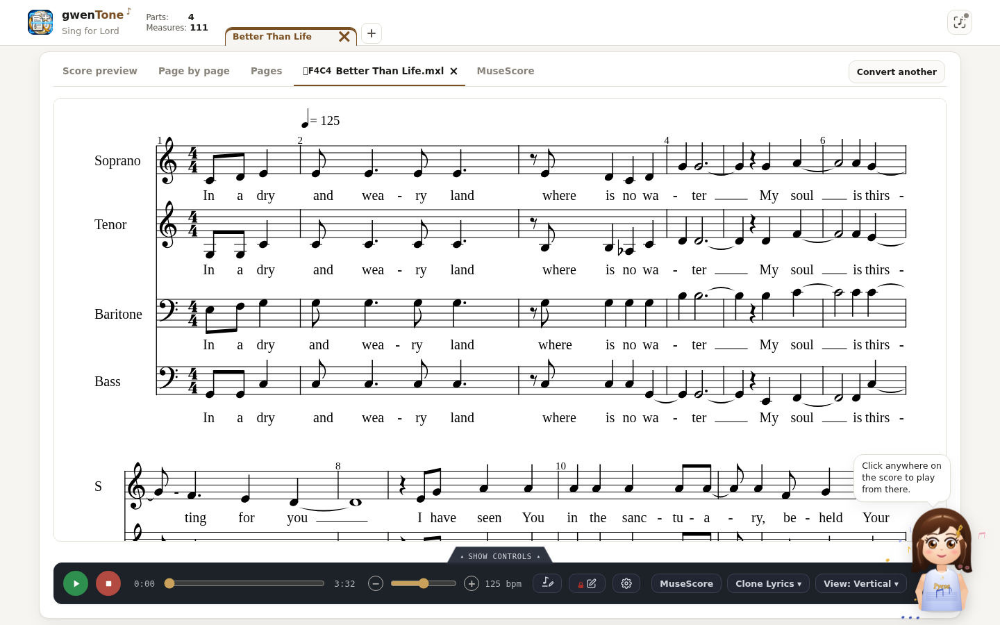
- The top bar shows the number of Parts, Pages and Measures; every open song has its own tab (+ opens another).
- Player bar: ▶ play, ■ stop, the position slider, and the tempo (− / +, in bpm).
- MuseScore, Clone Lyrics (copy lyrics from one part to others) and View: Vertical / Horizontal are on the same bar.
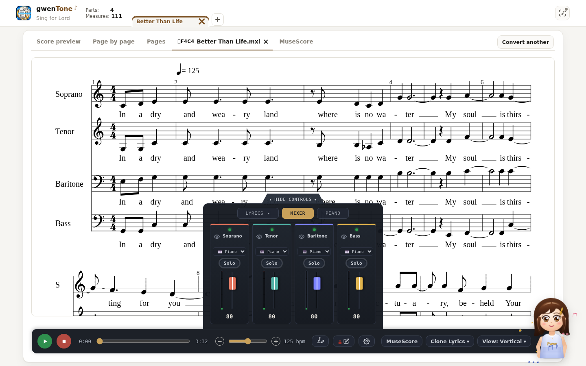
- Each voice (Soprano, Tenor, Baritone, Bass…) has a sound (Piano, Choir, Vocal, Singer, Render), a Solo button and a volume fader. The eye icon shows or hides that staff.
- LYRICS shows the words of one voice as it sings; PIANO opens an on-screen keyboard.
3.6 Moshi, the helper
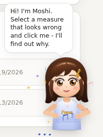
Moshi lives in the corner of gwenTone. She talks while a song is read (“Reading your pages…”), sings along during playback, and gives tips (“Click anywhere on the score to play from there”). Her real job is to help fix measures that do not add up.
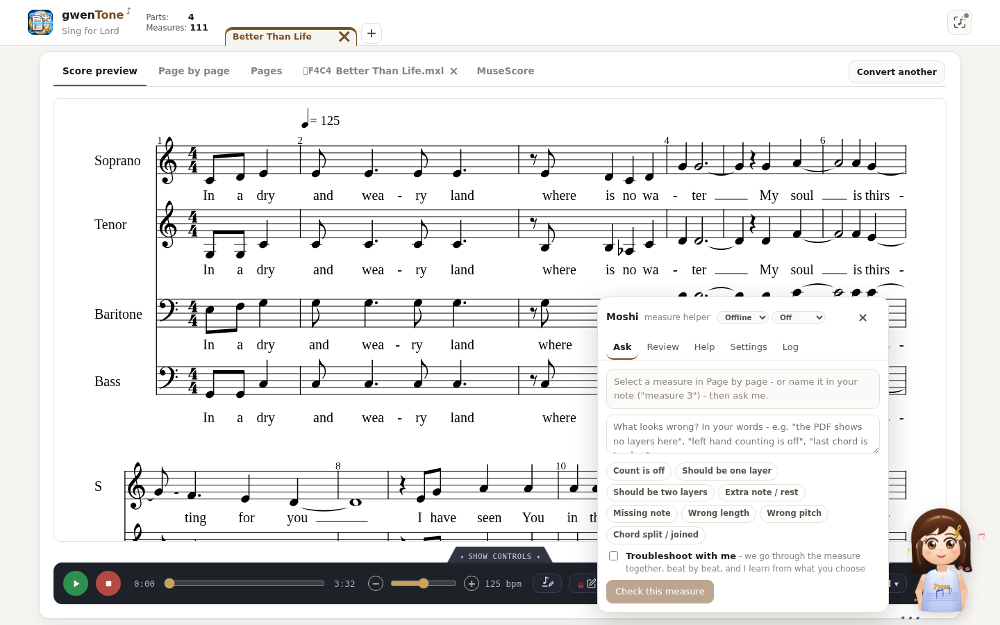
- Select a measure in Page by page (or type its number, e.g. “measure 3”).
- Describe what looks wrong, or tap a quick choice: Count is off, Missing note, Wrong length, Wrong pitch, Should be two layers, Chord split / joined…
- Press Check this measure. Moshi shows the scan, explains the cause and offers a fix to apply.
- Tick Troubleshoot with me to go through the measure together, beat by beat; Moshi learns from the choice you make.
- Review lists every measure that does not add up (sure fixes first); Put in the fixes I'm sure about applies them as one edit that one Undo takes back. Help answers questions about the app; Settings holds her options (including which buttons and tabs are shown); Log shows what she did.
- The two lists at the top choose Online / Offline and which online helper she may use (Off, Gemini, Groq or Claude).
3.7 MuseScore link and downloads
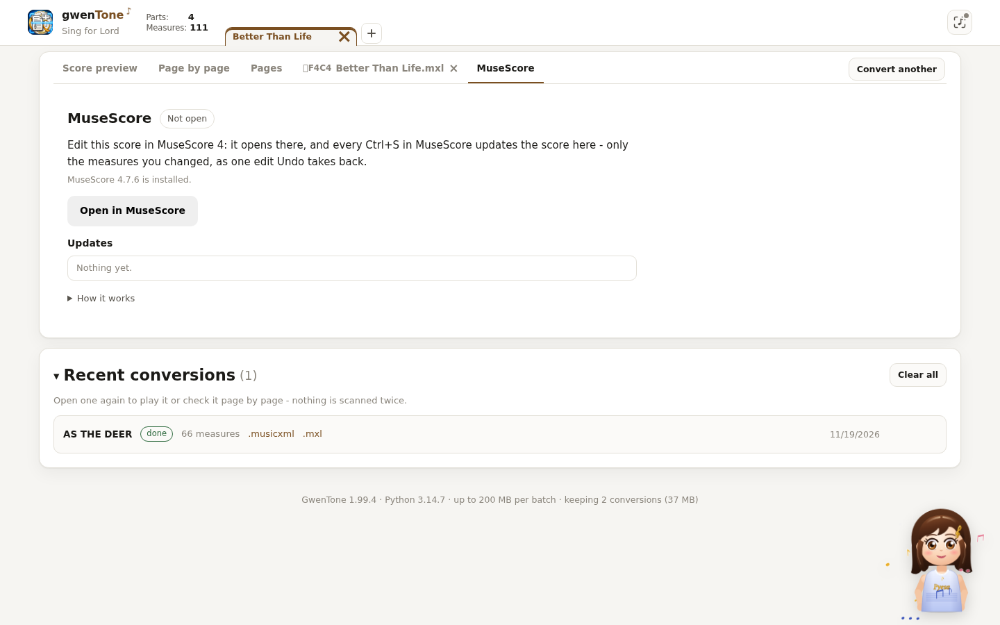
- Open in MuseScore for bigger edits. Changes come back measure by measure, and one Undo takes them back.
- The .mxl file tab and the Download menu give you the finished MusicXML for the Voice Renderer.
.mxl / .musicxml to the Voice Renderer (put it in D:\Ark2Files\MusicXML Files so the Renderer lists it).4. Voice Renderer
The Voice Renderer is the generator engine. It takes a finished score and makes one sung audio file per voice part (soprano, alto, tenor, bass), with the words, timed exactly to the score. These files are what the members hear when they pick Rendered in the SBE player, while the notes move along with them.
4.1 Starting it
- Double-click Start Voice Renderer.bat in the
Voice Rendererfolder (or start it from LocalServer). - It opens
http://localhost:9990/. Leave the black window open while rendering.
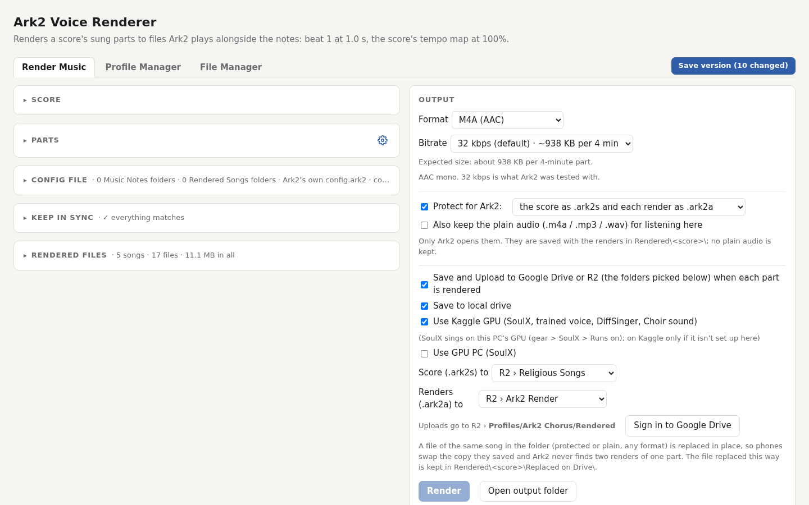
4.2 Pick the score and check the lyrics
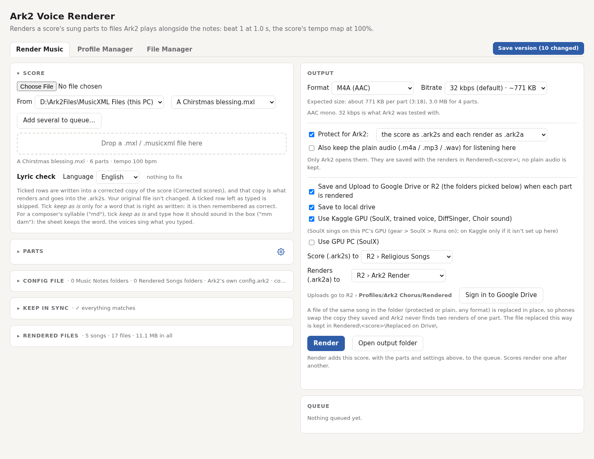
- Open Score. Choose a file, drop it on the dashed box, or pick a song from
D:\Ark2Files\MusicXML Files. Add several to queue… renders many songs one after another. - Lyric check: choose the language (English, Tagalog, Cebuano). It lists words the voices may pronounce wrongly. Tick a fix and press Apply ticked; your original file is never changed (a corrected copy is used).
4.3 Choose the voices (Parts)
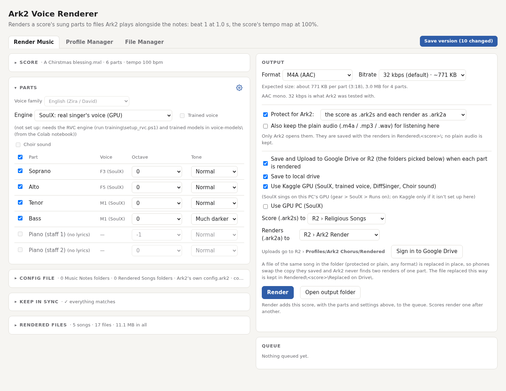
| Setting | What it does |
|---|---|
| Voice family | Language of the words: English (Zira / David), Piper, Bisaya (Cebuano) or Tagalog. |
| Engine |
A: a speech voice made to sing (fast, the original engine). B: DiffSinger, a real singing model with choral diction and vibrato. A+B: A's clear words with B's singing. SoulX: a choir member's real voice singing the exact notes and words (needs a GPU). Own: Ark2's own trained voices (M1 for men, F3 for women), on this PC. A → SoulX: A's timing, re-sung in the real singer's voice. |
| Trained voice | Re-sings each part in the voice of the Ark2 Vocal Training recordings. |
| Choir sound | With engine A (trained voice off): re-sings each part as a section of 5 voices. Slower, about 2.5 minutes per voice for a 5-minute part. |
| Part / Voice / Octave / Tone | Tick the parts to render; shift a part up or down an octave; make the tone brighter or darker (e.g. Much darker for bass). |
| ⚙ gear | Default settings used every time (voice family, engine, each part's voice and octave). |
4.4 Output, Render and the Queue
- Format: M4A (AAC, 32 kbps default, what Ark2 was tested with), MP3 or WAV. The expected file size is shown.
- Protect for Ark2: saves the score as
.ark2sand each render as.ark2a, files only the Ark2 app can open. - Save and Upload to Google Drive or R2: each part is uploaded as soon as it is ready, to the folders picked below (e.g. R2 › Religious Songs for the score, R2 › Ark2 Render for the renders). A new render of the same song replaces the old one, so phones swap their saved copy.
- Use Kaggle GPU: sends the heavy work (SoulX, trained voice, DiffSinger, Choir sound) to a free Kaggle GPU; seconds per part instead of minutes.
- Press Render. The song joins the Queue; songs render one after another. Open output folder shows the files in
Rendered\<song name>\.
4.5 Profile Manager: member accounts and PINs
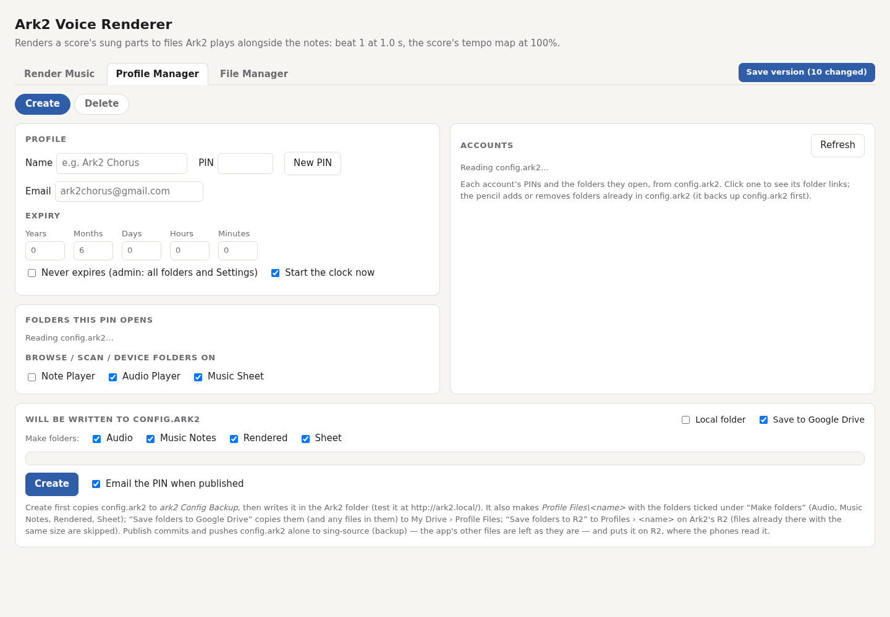
- Type the Name and an Email; press New PIN for a random PIN.
- Set the Expiry (default 6 months). Never expires is for admins only.
- Tick the folders this PIN opens, and which players can browse them (Note Player, Audio Player, Music Sheet).
- Press Create. The account is written to
config.ark2(backed up first), its folders are made on Google Drive / R2, and the PIN can be emailed to the member. - Delete removes an account. The Accounts list on the right shows every account and its folders.
4.6 File Manager: upload, remove, archive
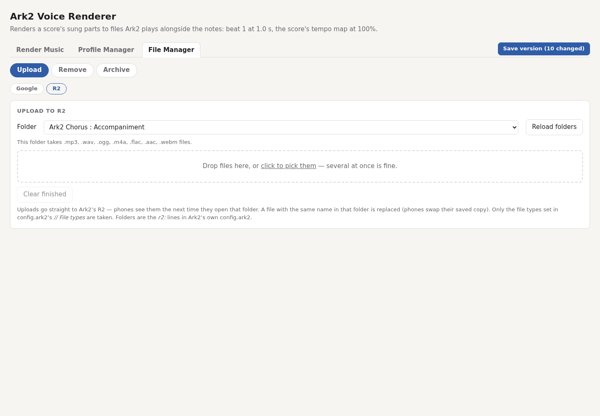
- Upload: pick Google or R2, choose the folder, and drop the files. Each folder accepts only its file types (e.g. audio for Accompaniment).
- Remove deletes files from the Online Drive; Archive frees space on R2: the ticked rendered songs move to the shared Archive folder on Google Drive (and can be put back). Auto-archive can do this by itself.
5. Ark2 Chorus SBE (Sing by Ear)
The SBE app is what every member uses. It is a web app installed on the phone from
https://ark2chorus.pages.dev/. It needs no server at home and works offline once songs are downloaded.
(Screenshots taken with the Demo Version account.)
5.1 Install, PIN and home screen
- Android: open the link in Chrome → ⋮ → Install app / Add to Home screen.
- iPhone / iPad: open it in Safari → Share → Add to Home Screen.
- Always open Ark2 Chorus from the Home screen. Type your PIN and tap UNLOCK; the phone remembers it until it expires. No PIN? Tap Create account or the green 📞.
- The Ark2 Chorus ⌄ menu switches between Note Player, Audio Player and Music Sheet.
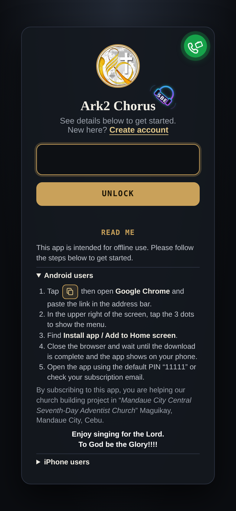
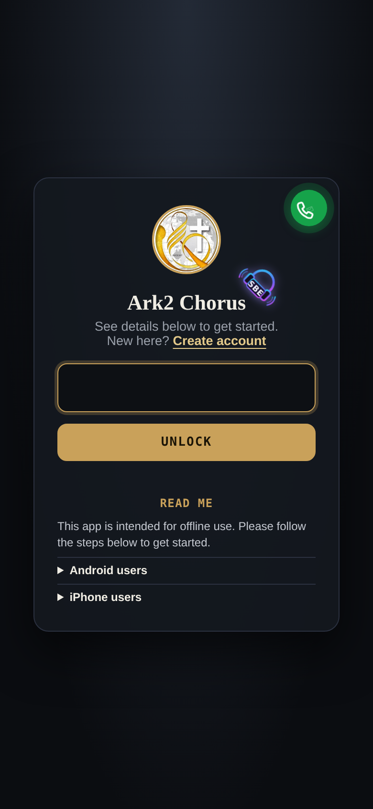
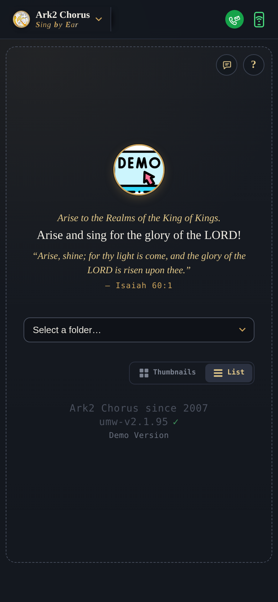
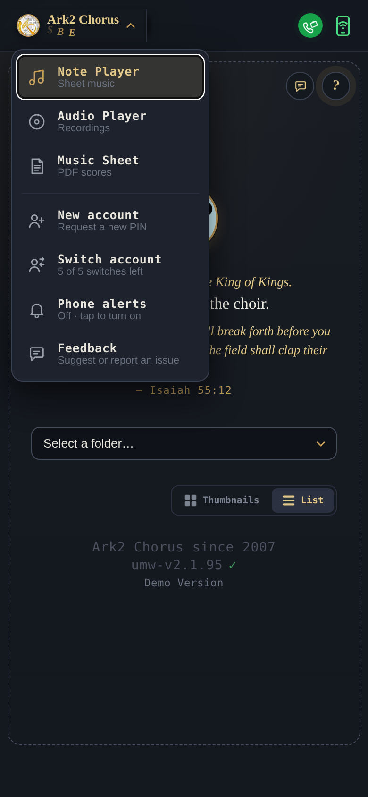
5.2 Get songs onto the phone
- Tap Select a folder…: Online Drive ☁ (needs internet) or On this device 📥 (saved songs).
- Tap Download all, or ⬇ beside one song. A green 🎙️ means its voices are rendered.
- To free space, open the song under On this device and tap 🗑; it stays on the Online Drive.
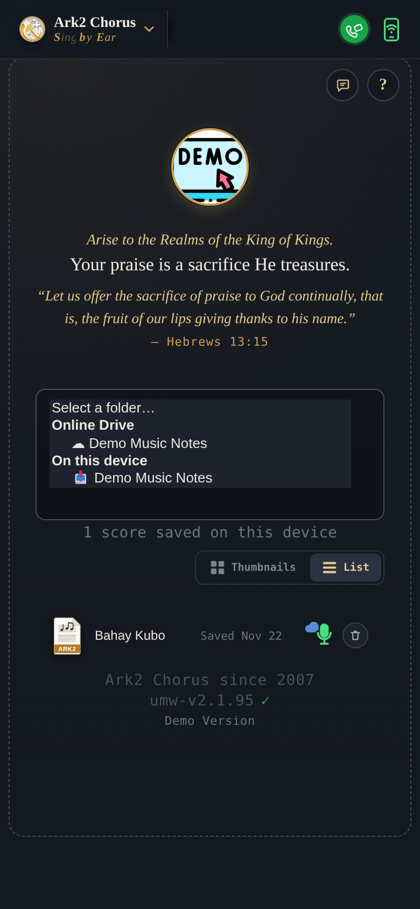
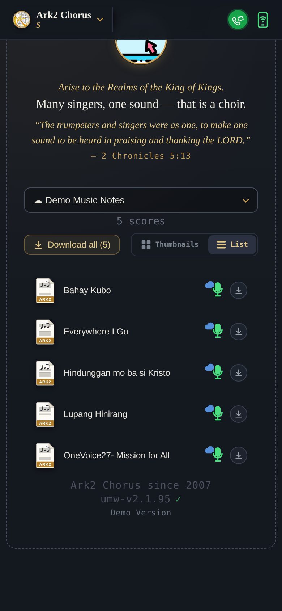
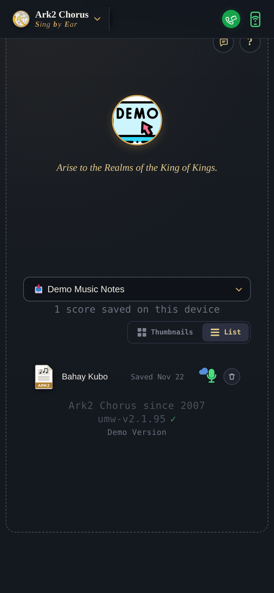
5.3 Practise with the Note Player
- Tap a song, then the green ▶. The notes scroll and a blue bar follows the beat.
- MIXER: one strip per voice. 👁️ shows/hides the staff; the instrument list chooses the sound (pick Rendered for the sung voice from the Voice Renderer); Solo / Duet; slider for volume.
- Tempo: slow the song down with − / +; tap the knob to go back to the original tempo.
- LYRICS: choose a voice; the current syllable lights up as it is sung.
- PIANO: an on-screen keyboard; connect a MIDI piano to record.
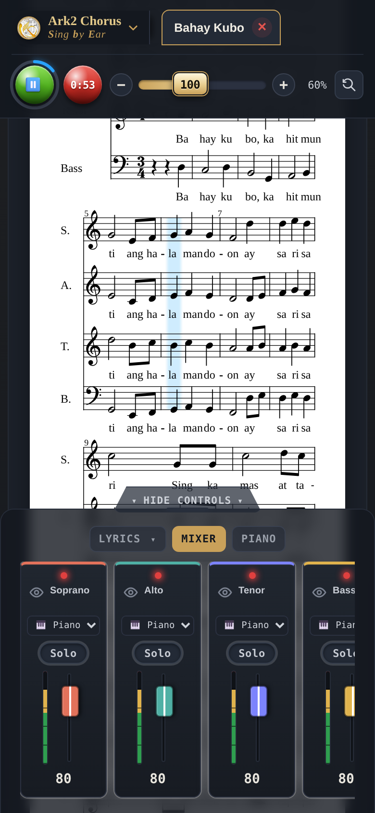
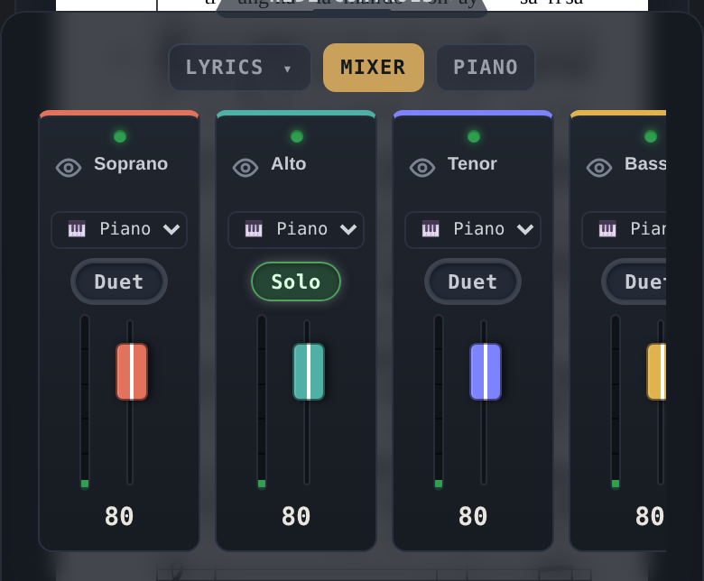
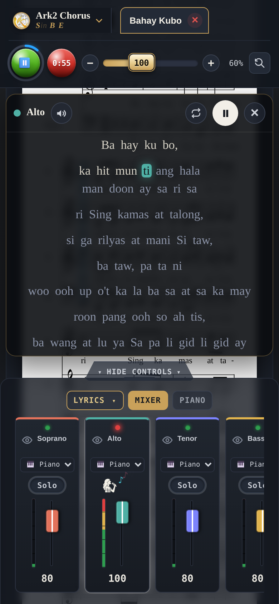
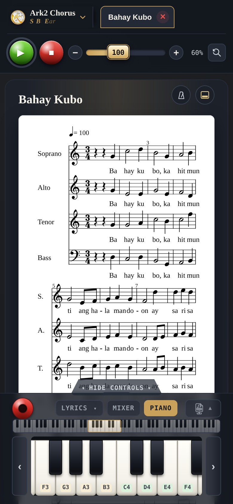
- Listen: Solo your own part, a little slower, and follow the notes.
- Sing along: keep your part on and lower its slider as you lead it yourself.
- Blend: tap Duet on the other voices one at a time.
- Test yourself: turn your part off and sing it with the others at the real tempo.
5.4 Audio Player, Music Sheet and updates
- Audio Player: plays recordings and accompaniments, with shuffle, repeat, ±10 s and playlists.
- Music Sheet: opens the PDF; swipe to turn pages and play a recording or voice along with it.
- Update available: tap UPDATE NOW. Saved songs and settings are kept.
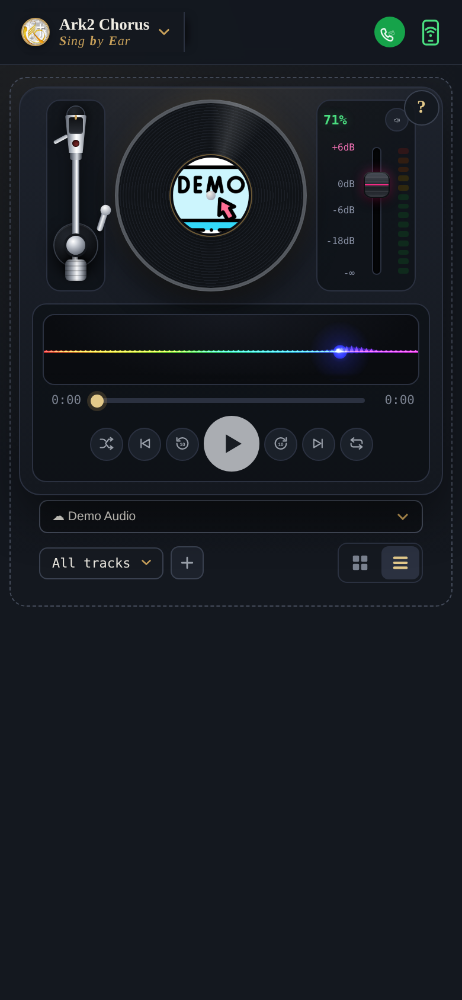
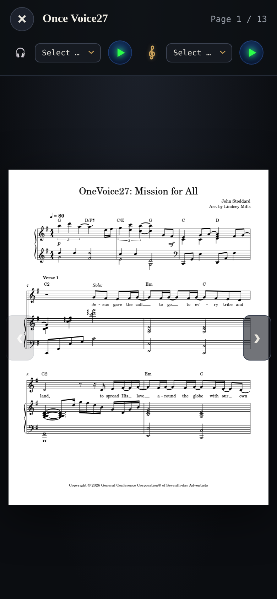
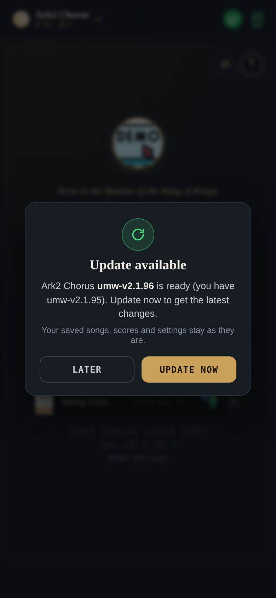
5.5 Troubleshooting
| Problem | What to do |
|---|---|
| Online Drive is empty or missing | Tap the connection mark (top right). Connect to the internet and try again. |
| Song has no green 🎙️ | It is not rendered yet. Ask Ark2 (📞) to run it through the Voice Renderer. |
| Rendered voice won't play | Download the song first, then choose Rendered once while online. |
| Asked for the PIN again | It expired or was changed. Ask Ark2 for a new one (made in Profile Manager). |
| App opens in the browser | Open Ark2 Chorus from the Home screen. |
6. Tasks involved
Getting one song from paper to the members' phones takes four tasks, done in this order. The table is the summary; each task's detailed workflow follows below.
| Task | Who | App | Result |
|---|---|---|---|
| Task 1. Scanning and editing | Ark2 encoder | gwenTone + Moshi | A correct MusicXML score (.mxl) |
| Task 2. Rendering | Ark2 encoder | Voice Renderer | Sung parts (.ark2a) and the protected score (.ark2s) on the Online Drive |
| Task 3. Accounts (Profile Manager) | Ark2 admin | Voice Renderer › Profile Manager | A PIN for the member, opening their folders |
| Task 4. Final output: Ark2 SBE | Every member | Ark2 Chorus SBE | Learning the part by ear, anywhere, even without the trainer |
Task 1. Scanning and editing in gwenTone
Input: a PDF, scan or phone photos of the music sheet. Output: a checked .mxl in D:\Ark2Files\MusicXML Files.
- Receive the music. A member or the trainer sends the sheet (PDF or photo) through the green 📞 in SBE, email or chat. Save it on the Ark2 PC with the song's title as the file name.
- Start gwenTone. Run
run.cmdin thePyesa Scannerfolder (or start it from LocalServer) and open it in the browser. - Add the pages. Drop the file(s) on Drop sheet music here or press Choose files. For a paper copy, press Scan with phone, scan the QR code with a phone on the same Wi‑Fi, photograph each page flat and in even light, then tap Send. Several files become one song, in the order shown.
- Choose the settings. Leave Use recommended settings ticked for printed hymns and choral music (OMR trained, 400 dpi). Untick it and pick AI for handwriting or poor photos. Type page numbers in Pages to skip covers or blank pages.
- Convert. Press Convert to MusicXML. Moshi says what is happening (“Reading your pages…”). When it is done, the top bar shows the number of Parts, Pages and Measures.
- Check the pages. Open the Pages tab: every page must be there, upright and readable. A page marked wrongly (e.g. handwritten on a printed page) or badly cleaned is a reason to use Rerun page… with another engine.
- Compare page by page. In Page by page, turn on Scrolling together and go through each page with Next Page. Compare the scan (left) with what was recognised (right): the number of parts, the clefs, the key and time signatures, and the lyrics under each voice. A page chip marked empty means nothing was read from it.
- Go through “Worth checking”. The chip at the top right lists the measures that probably have a mistake. Click an item to jump to that measure.
- Fix the mistakes. Click a note and correct it:
- Wrong pitch (the most common error): ▲ / ▼ or the up/down arrow keys; 8va+ / 8va− for an octave.
- Wrong length: pick the right note value (the measure keeps its length).
- Missing or extra notes: +Note, +Rest, or turn an invented note into a rest.
- Sharps and flats: the accidental buttons.
- A part repeated from another: click the empty part of a measure, Copy, click the target measure, Paste.
- A part with a wrong name (“Voice 4”): click the name at the left of the score and pick Soprano, Alto, Tenor, Bass… (the name decides which singer is used later).
- Ask Moshi when a measure does not add up. Select the measure, click Moshi (or the speech-bubble icon), choose what looks wrong (Count is off, Wrong pitch…) and press Check this measure. Apply her fix, or tick Troubleshoot with me to go through it beat by beat. Her Review tab lists every measure that does not add up; Put in the fixes I'm sure about applies the safe ones at once.
- Bigger edits in MuseScore (optional). On the MuseScore tab press Open in MuseScore. Each Ctrl+S in MuseScore brings the changes back into gwenTone.
- Save. Press Save in Page by page. Unsaved edits are lost if the app is restarted. Undo takes back the last edit; Revert all drops all unsaved edits.
- Listen to the whole song. On Score preview, press ▶. Open SHOW CONTROLS and Solo each voice in turn: listen for notes that sound wrong, a voice that is silent, and lyrics under the right notes (LYRICS tab). Click anywhere on the score to replay a passage, fix it, and save again.
- Hand over the score. Download the .mxl (from the file tab or the Download menu under the gear) and save it in
D:\Ark2Files\MusicXML Files, named after the song. It now appears in the Voice Renderer's song list.
.mxl is in MusicXML Files.Task 2. Rendering process (Voice Renderer)
Input: the .mxl from Task 1. Output: <song>.ark2s and one <song> - <part>.ark2a per voice, uploaded to the account's folders.
- Start the Renderer. Double-click Start Voice Renderer.bat; it opens
http://localhost:9990/. Keep the black window open until rendering is finished. - Check the setup (first time each day). Open Keep in sync: it should say ✓ everything matches; otherwise press Sync everything. Config file should point to Ark2's own
config.ark2, since the upload folders come from it. - Open the score. In Score, pick the song from the list of
MusicXML Files(or Choose File / drop it). The line below shows the number of parts and the tempo; check that they match gwenTone. For many songs at once, use Add several to queue…. - Lyric check. Choose the language (English, Tagalog, Cebuano). For each word listed, type how it should be sung and tick it; tick keep as is for a word that is right as written. Press Apply ticked. A corrected copy is used; the original file is not changed.
- Set the parts. Open Parts:
- Voice family: the language of the words.
- Engine: SoulX for the most real voice (GPU), Own for Ark2's trained voices on this PC, A for a quick test.
- Tick the sung parts only (piano staves have no lyrics and are skipped).
- Octave: 0 normally; use it if a part sounds too high or low for its singer.
- Tone: Normal, or darker for bass.
- Set the output. In Output:
- Format M4A (AAC), 32 kbps (what Ark2 is tested with; the expected size is shown).
- Tick Protect for Ark2 (score as
.ark2s, renders as.ark2a). - Tick Save and Upload to Google Drive or R2, and choose the folders: Score (.ark2s) to the account's music notes folder (e.g. R2 › Religious Songs) and Renders (.ark2a) to its rendered folder (e.g. R2 › Ark2 Render).
- Tick Use Kaggle GPU for SoulX, the trained voice, DiffSinger or Choir sound, so parts render in seconds instead of minutes.
- Render. Press Render. The song joins the Queue and parts are made one after another; each part is uploaded as soon as it is ready. Changing the page afterwards does not change songs already queued. Force stop ends everything if the PC can't keep up.
- Listen before sharing. In Rendered files (Show: This PC), play each part: right words, right notes, in time. If one part is wrong, fix it (lyric, octave, tone) and render that part again; the new file replaces the old one on the Drive, and phones swap their saved copy.
- Verify on the Online Drive. Switch Rendered files to the Drive view, or open the folder in File Manager: the
.ark2sand every part's.ark2ashould be there. In SBE the song now shows a green 🎙️. - Other files (optional). Use File Manager › Upload for accompaniments, recordings or PDF sheets, choosing Google or R2 and the folder. Use Archive to move old rendered songs off R2 to free space.
.ark2s and .ark2a files are in the right Online Drive folders.Task 3. Account creation and managing the Profile Manager
Input: a member or group asking for access. Output: a working PIN that opens the right folders in SBE.
A. Create an account
- Open Profile Manager › Create in the Voice Renderer.
- Profile. Type the Name (the person or the group, e.g. a church choir) and the Email the PIN should go to. Press New PIN for a random PIN, or type one.
- Expiry. Set how long the PIN works (Years / Months / Days / Hours / Minutes; 6 months by default). Keep Start the clock now ticked. Tick Never expires only for an admin: an admin sees all folders and Settings.
- Folders this PIN opens. Tick the existing folders the account may see (e.g. Religious Songs, Ark2 Render). Under Browse / Scan / device folders on, tick the players where the member may browse: Note Player, Audio Player, Music Sheet.
- Own folders (optional). Under Will be written to config.ark2, tick Make folders (Audio, Music Notes, Rendered, Sheet) to give the account its own folders, and where to keep them (Save to Google Drive / Local folder). These are the folders you choose in the Renderer's Output (Task 2) for this account's songs.
- Create. Press Create. The current
config.ark2is first backed up to ark2 Config Backup, then the account and PIN are written. Check the preview line before pressing it. - Publish. Press Publish (it appears after Create). The config goes live in about a minute. Until you publish, phones do not know the new PIN. With Email the PIN when published ticked, the PIN is emailed to the account's address.
- Test. Open
https://ark2chorus.pages.dev/(orhttp://ark2.local/), enter the new PIN, and check that only the intended folders show under Online Drive ☁.
B. Manage existing accounts
- See accounts: the Accounts list (right side; Refresh reloads it) shows each account's PINs and the folders they open. Click one to see its folder links.
- Add or remove folders: the pencil on an account adds or removes folders that are already in
config.ark2(backed up first). Then Publish. - Expired PIN: when a member is asked for the PIN again, it expired or was changed. Give them a new PIN with a new expiry (Create on the same name updates that account instead of making a second one), then Publish.
- Delete an account: Profile Manager › Delete, pick the profile, review its PINs and folders, and choose what else to remove: its folder lines in
config.ark2, its Google Drive folder (to the Drive trash), its R2 files (no undo), its local Profile Files folder (to the Recycle Bin). Press Delete, then Publish. Folders shared with other accounts are kept, and the only admin can't be deleted.
Task 4. Final output: the Ark2 SBE app
Input: the member's PIN (Task 3) and the rendered song (Task 2). Output: the member learning their part by ear, online or offline.
- Install. Open
https://ark2chorus.pages.dev/: Android in Chrome → ⋮ → Install app; iPhone in Safari → Share → Add to Home Screen. Always open it from the Home screen. - Unlock. Type the PIN and tap UNLOCK. The phone remembers it until it expires.
- Find the song. In Note Player, tap Select a folder… → a folder under Online Drive ☁. A green 🎙️ beside a song means the rendered voices from Task 2 are there.
- Download it. Tap ⬇ beside the song, or Download all. It then appears under On this device 📥 and works without internet.
- Choose the rendered voice. Open the song, show the MIXER, and in your part's instrument list choose Rendered (do this once while online, after downloading). The other parts can stay on Piano or also use Rendered.
- Practise. ▶ plays the song with the notes scrolling. Solo your part and slow the Tempo down; open LYRICS to follow the words syllable by syllable; then add the other voices with Duet; finally turn your part down and sing it yourself at full tempo.
- Other players. Audio Player for recordings and accompaniments; Music Sheet to read the PDF and play a voice along with it.
- Keep it up to date. When Update available appears, tap UPDATE NOW. A re-rendered song replaces the old copy by itself. Delete songs no longer needed with 🗑 under On this device.
- Feedback. A wrong note or word is reported with 💬 or the green 📞. It goes back to Task 1 (fix the score) or Task 2 (render again).
7. SBE Community
7.1 What it is and how to use it
SBE Community is a shared wall inside the Ark2 Chorus SBE app where members post photos and short videos from practices, programs and church events, and like, reply to and follow each other. It is opened from the logo menu › SBE Community, and only shows there while an admin has it turned on.
For members: joining and posting
- Open it. In the installed app (not a browser tab), tap the logo menu › SBE Community.
- Join. Tap Join SBE Community, type your name, email and your PIN again. The app may ask to share your location (rounded to about 1 km). If the admin turned on Email code, type the 6-digit code sent to your email.
- Post. Tap the round + button, take or choose a photo or video, write a caption and post. Big photos and videos are made smaller on the phone first. There is a limit of posts and videos per day, and on video length.
- Take part. ❤️ to like, 💬 to reply, Follow to see someone's posts in your following list.
- Keep it clean. Use Report on anything that does not belong; a moderator looks at it. You can delete your own posts and replies, or Leave on this phone (your posts stay; join again with the same email to come back).
For admins: settings and moderation (Ark2 Profile Manager › Community tab, admin only)
| Setting | What it does |
|---|---|
| Community on | Shows or hides SBE Community in every member's menu. |
| AI checks posts and replies | Checks text (and, once turned on, pictures) automatically; anything doubtful waits for a moderator. |
| Email code to join | Members must confirm their email with a 6-digit code. |
| App opens first | Open the app on the Home screen (current) or straight on the Community wall. |
| Location when joining | Ask (denying still joins), Required, or Don't ask. |
| Limits | Posts a day per member, videos a day per member, video length in seconds, and the most members allowed. |
- Needs a look: posts and replies waiting for a moderator; approve or remove them. Newest posts and Replies show everything recent.
- Members: name, email, account, location, date joined and number of posts. Mute (can look and like, but not post or reply), Ban (can't open the Community; that email can't join again) or Erase (deletes the member and everything they posted, for a request to remove someone's data).
- The usage page shows how much of the free online storage and database the Community uses.
8. Glossary
| Term | Meaning |
|---|---|
MusicXML (.musicxml, .mxl) | The standard file for written music; it holds the notes, parts and lyrics. |
| OMR | Optical Music Recognition: reading notes from a picture of a music sheet. |
| Measure | One bar of music, between two bar lines. |
| Part / voice | Soprano, Alto, Tenor, Bass (and others such as Baritone or Piano). |
| Render / Rendered | A part sung by a computer voice with the words, made by the Voice Renderer. |
.ark2s / .ark2a | Protected score / protected audio that only the Ark2 app can open. |
| Online Drive (R2 / Google Drive) | Where songs are stored online; each account's PIN opens its own folders. |
| PIN | A member's key to the SBE app; it can expire and decides which folders are visible. |
| Kaggle GPU | A free online graphics card used to render the heavier voices quickly. |
| SBE Community | The members' shared photo and video wall inside the SBE app. |
| Moshi | The helper inside gwenTone that explains and fixes wrong measures. |
Ark2 Chorus · Mandaue City Central SDA Church (Maguikay) · In memory of Gwen & Tony Jayme